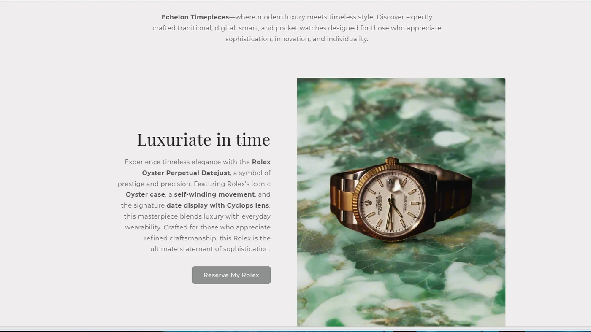
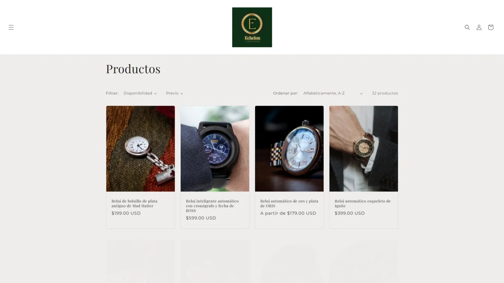
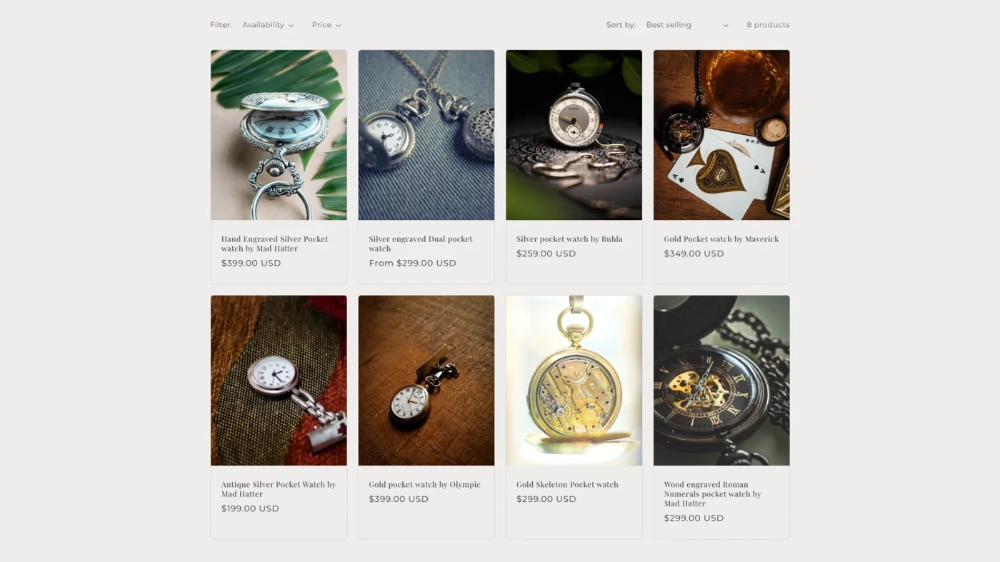

Shopify commerce case study
Echelon Timepieces
A complete luxury-watch development storefront combining product storytelling, catalog organization, responsive commerce UX, bilingual presentation, and cohesive image direction.
Visitor password: xeutus25

Project overview
Echelon Timepieces is a Shopify development store built as a complete e-commerce example rather than a single themed landing page. I organized the catalog, developed the visual direction, refined storefront content, and shaped the browsing experience across product categories and screen sizes.
The goal was to present traditional, digital, smart, and pocket watches within one coherent premium identity while keeping the interface calm, usable, and product focused.
Product storytelling and image direction
Editorial sections pair focused product copy with larger imagery to move the experience beyond a standard product grid. Typography, neutral surfaces, spacing, and restrained controls support the luxury positioning without competing with the watches.
For selected supplied product images, I used Shopify's built-in AI image tools to refine or create backgrounds that better matched the storefront's palette and visual tone. I treated the tool as part of an art-direction workflow: the final choices, consistency, and placement remained deliberate design decisions.

Catalog and localization
The catalog contains 32 products with category organization, filtering, sorting, pricing, and consistent image presentation. Dedicated collections let visitors compare related products without losing the broader storefront identity.
I also configured English and Spanish presentation so the storefront could demonstrate a broader customer experience. The translated catalog preserves the same hierarchy, product information, and commerce controls rather than treating localization as a decorative language switch.


Outcome
A cohesive storefront demonstrating practical commerce and content decisions.
Echelon shows my ability to work within an established commerce platform while still making deliberate decisions about information architecture, merchandising, responsive UX, localization, content, and visual consistency. The protected development store remains available for recruiters to explore using the visitor password provided above.
Continue exploring